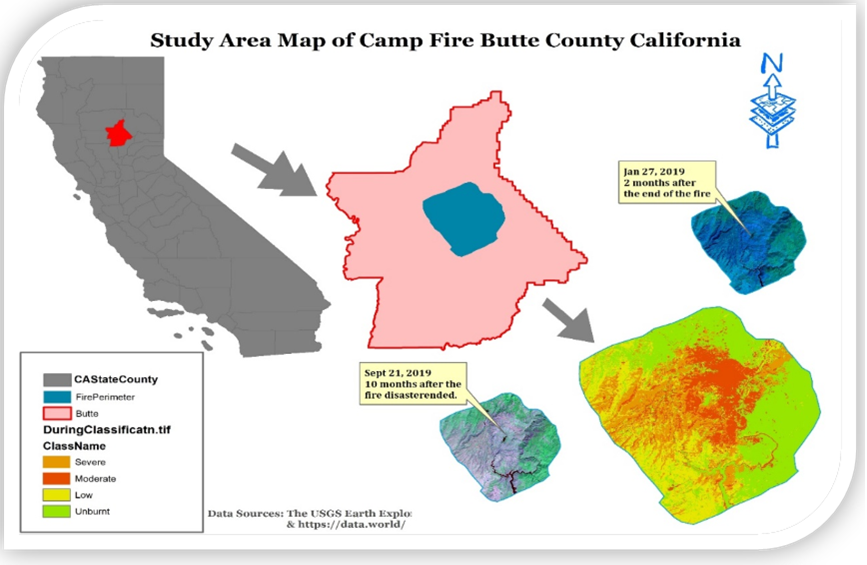
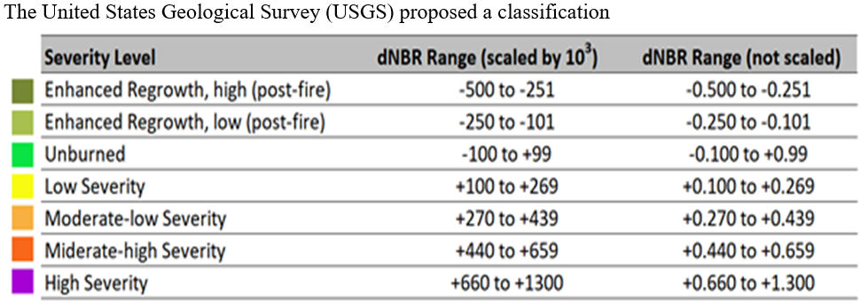
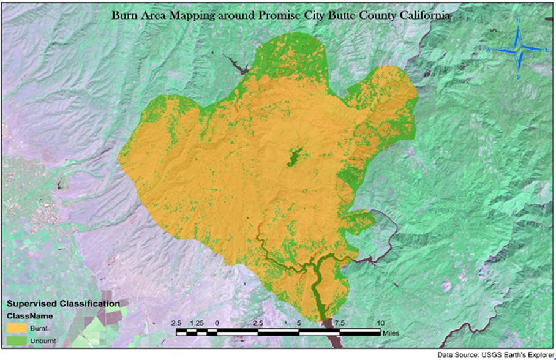
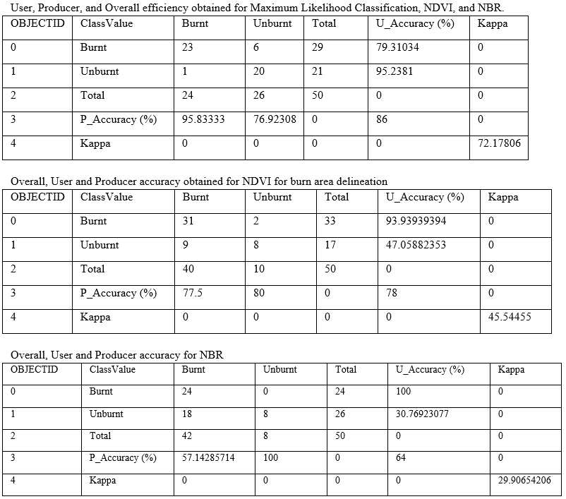
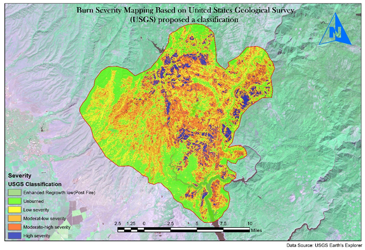
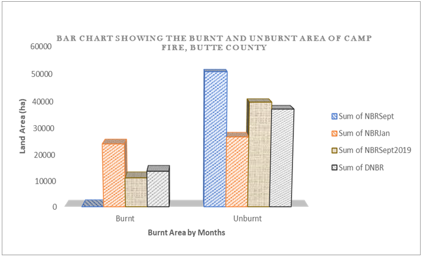
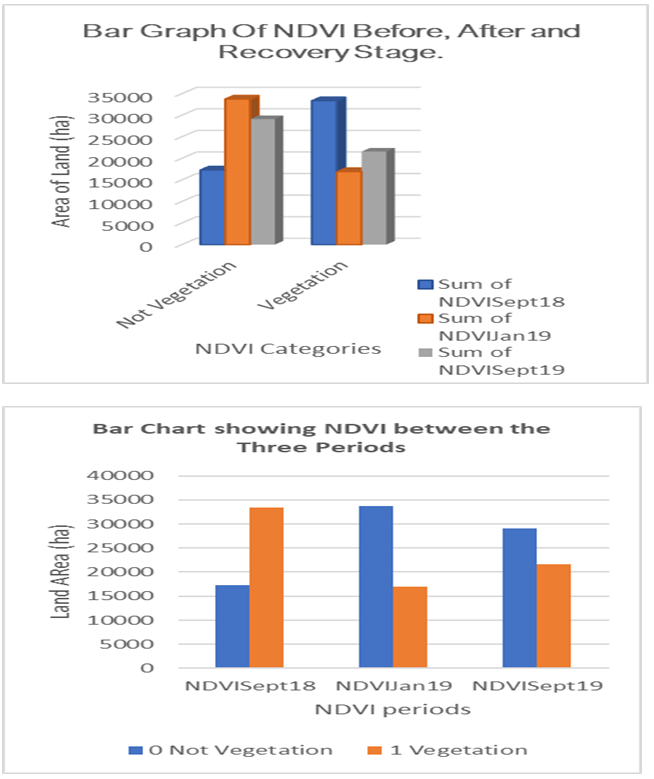
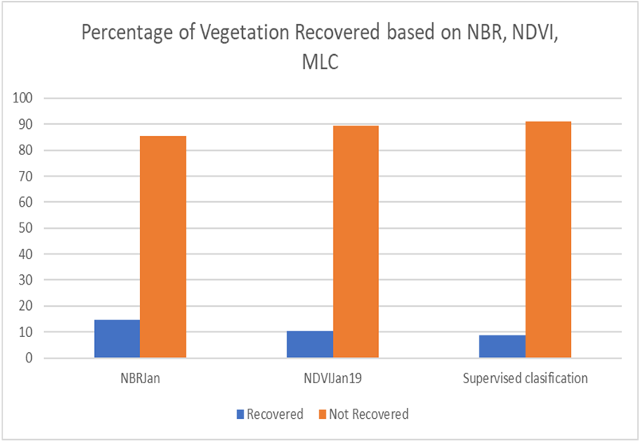
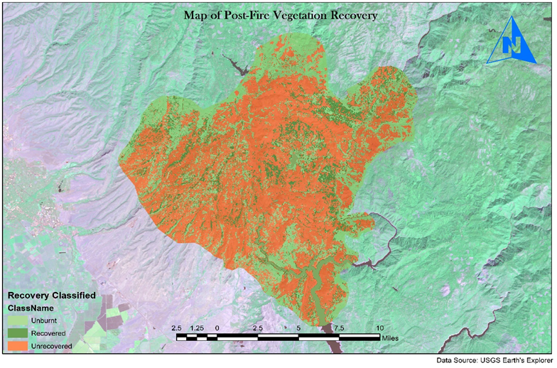

Assessing Fire Severity and Vegetation Regeneration using Landsat imagery: A case study in Paradise Town, Butte County – California










The primary objectives of this project were:
- Delineate the extent of the fire area and the degree of fire severity that existed during the wildfire at Paradise Town using the Differenced Normalized Burn Ratio Index (DNBR), Normalized Difference Vegetation Index (NDVI), and supervised classification;
- Extract estimates of restored vegetation by explicitly measuring the spectral signature of satellite imagery of the area and quantitatively determine the amount of restored vegetation in the field using NDVI.
The results show that the maximum likelihood method was the most appropriate, with an overall accuracy of 86% and a kappa statistic of 72%. Finally, it was found that the amount of vegetation restored was approximately 8.86% of the land area consumed by fire (3525,132102).
My work on this project focused mainly on the acquisition of data from USGS , training sample extraction, band ratioing (spectral indices calculation) and training the Maximum Likelihood Classifier (MLC). Data processing steps are performed using ArcGIS Desktop and ArcGIS Pro.